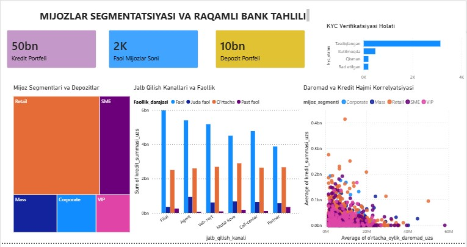
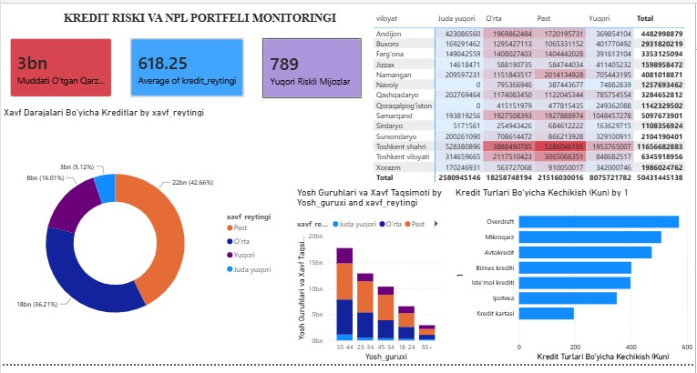
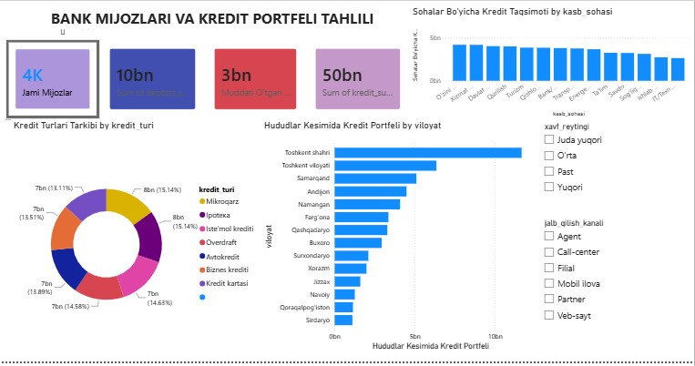

Portfel Ko'rsatkichlari va Kengaytirilgan Risk Tahlili
PostgreSQL • Python EDA • Power BI • 4,000 ta Mijoz Portfeli
Baza Statusi: Faol (4,000)
Jami Portfel
50.4 mlrd
1,670 ta shartnoma
41.8% ulush
Depozit Portfeli
10.1 mlrd
1,392 ta omonatchi
34.8% qamrov
Muddati O'tgan (NPL)
3.2 mlrd
128 ta muammoli kredit
PAR: 6.3%
O'rtacha Daromad
6.91 mln
O'rtacha yosh: 37.8
Erkak 50% / Ayol 50%
O'rtacha Skoring
618.3
Toifa: Barqaror / O'rta
Min: 346 | Max: 850
Yuqori Xavfli Mijozlar
789 ta
Skoring < 500 va kechikkan
Kredit Yuki Outlier (IQR)
559 ta
DTI me'yoridan ortiq
Ketish Xavfi (Churn)
54 ta
Faolmas / 60+ kun kirmagan
Raqamli Qamrov (App)
3,448 ta
86.2% raqamli kanallarda
Kredit Mahsulotlari Portfeli
7 ta yo'nalish
Mikroqarz
7.63 mlrd (15.1%)
Ipoteka Krediti
7.63 mlrd (15.1%)
Iste'mol Krediti
7.37 mlrd (14.6%)
Overdraft
7.35 mlrd (14.5% - Xavfli)
Avtokredit
7.00 mlrd (13.8%)
Biznes Krediti
6.81 mlrd (13.5%)
Kredit Kartalari
6.61 mlrd (13.1%)
Hududiy Portfel Taqsimoti
14 ta hudud
Toshkent shahri
953 ta mijoz (23.8%)
11.65 mlrd UZS
Portfelning 23.1%
Toshkent viloyati
478 ta mijoz (11.9%)
6.34 mlrd UZS
Portfelning 12.5%
Samarqand viloyati
369 ta mijoz (9.2%)
5.09 mlrd UZS
Portfelning 10.1%
Andijon viloyati
315 ta mijoz (7.8%)
4.48 mlrd UZS
Portfelning 8.9%
Boshqa 10 ta hudud
1,885 ta mijoz
22.84 mlrd UZS
Portfelning 45.4%
Mijoz Qiymat Indeksi (Tiering)
Colab Kvantillari
Platina (Tier 1)
Yuqori tranzaksiya va qoldiq
5.29 mln UZS
O'rtacha oylik aylanma
Oltin (Tier 2)
O'rta barqaror toifa
3.81 mln UZS
O'rtacha oylik aylanma
Oddiy (Tier 3)
Bazaviy foydalanuvchilar
2.44 mln UZS
O'rtacha oylik aylanma
Eng Samadali Jalb Qilish Kanallari:
Veb-sayt: 1.83 mlrd depozit
Partner: 1.75 mlrd depozit
Agent: 302 ta kredit
Asosiy Analitik Topilmalar
- Bank mijozlari asosan 25–44 yosh oralig'idagi, poytaxt va yirik hududlarda yashovchi raqamli xizmatlarga o'ta moyil aholi qatlamidir.
- Kredit summasi va kredit yuklamasi foizi o'rtasida o'rtacha to'g'ri korrelyatsiya (r = 0.52) mavjud[cite: 1].
- Aniqlangan 559 ta Outlier mijozda qarz yuki daromadiga nisbatan xavfli darajada yuqori[cite: 1].
- Kredit portfelining 35.6% qismi Toshkent shahri va viloyati hissasiga to'g'ri kelib, hududiy konsentratsiya xatari mavjud[cite: 1].
Bank Risk-Menejmenti Uchun Tavsiyalar
- Overdraft va Mikroqarz mahsulotlarida to'lov muddati kechikishini erta aniqlovchi EWS (Early Warning System) mexanizmini kuchaytirish[cite: 1].
- Past kredit reytingli (skoring < 500) bo'lgan 346 ta mijoz uchun avtomatik kredit limitlarini cheklash[cite: 1].
- Raqamli kanallardan (mobil ilova) faol foydalanmayotgan 552 ta mijozni ilovaga jalb qilish orqali tranzaksiya hajmini oshirish[cite: 1].

1-Sahifa Xulosasi: Retail va SME segmentlari portfel aylanmasining asosiy qismini ta'minlaydi[cite: 1]. Filial va agentlar jalb qilishda yetakchi[cite: 1].

2-Sahifa Xulosasi: 3 mlrd so'mlik muddati o'tgan qarzlar asosan Overdraft va Mikroqarz mahsulotlariga to'g'ri kelmoqda[cite: 1].

3-Sahifa Xulosasi: Umumiy 50.4 mlrd so'mlik portfel barcha kredit turlari bo'yicha deyarli teng (13%–15% dan) taqsimlangan[cite: 1].
Amaliyot hisoboti (Word asosidagi PDF hujjat)[cite: 1]
Alohida oynada ochish